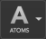

Maestro has powerful tools for selecting atoms in the Workspace. The Selection toolbar and many of the panels allow you to choose what is selected when you click on an atom. You can select just the atom itself, or the bond, residue, chain, molecule, or entry to which it belongs. This is referred to as choosing the "picking level" or the selection scope.
For example, to label atoms in a residue, choose Residues from the Selection Scope button menu.

Click on an atom in the residue, then choose Apply Labels in the Style toolbox. The atoms in the selected residue are labeled with the current label.
When you are picking, you can click on an atom, a bond, or a ribbon. Clicking on a bond selects the two atoms that are bonded. Clicking on a ribbon is the same as clicking on the alpha carbon for that ribbon segment.
For more information, see Selection Toolbar.
In the panels, the Pick option menu allows you to choose the object to pick. Depending on the operation to be performed, the Pick option menu contains one or more of the following objects:
In general, if a specified number of atoms needs to be selected (i.e. to measure an angle) or if atoms need to be selected in a specific order (i.e. to define atom pairs for superposition) then only Atoms or Bonds are available.
If, however, an arbitrary number of atoms can be specified for input and the order in which they are specified is not important, then all the objects are available.
As well as the Pick option menu, many panels have an All button, to pick all atoms, and a selections button, labeled with a +, to pick from a list of common objects.
You can pick more than one atom at a time by dragging over the atoms, or over the ribbons associated with the atoms if the atoms are not displayed. Dragging draws a rectangular region, which might not contain all the atoms you want, or might contain atoms that you don't want in the selection. To add atoms to the selection, hold down SHIFT when you click on an atom or drag over a number of atoms. Likewise, to invert the selection of atoms (select the unselected atoms, deselect the selected atoms), hold down CTRL while you click or drag. You can also use the additive and subtractive picking buttons so that picking adds to or removes from the selection.